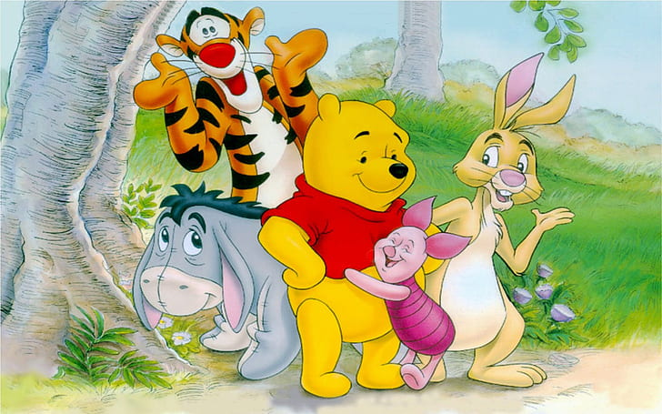
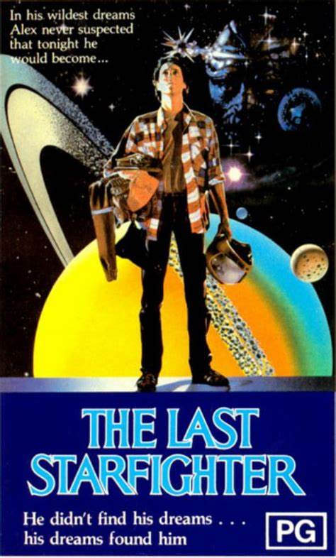
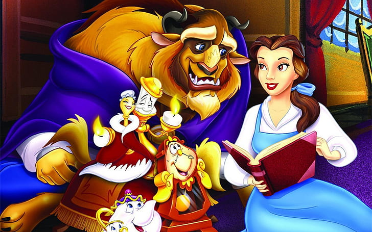
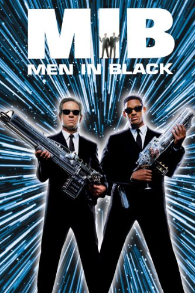

ZGODNJA LETA (70. LETA)
|
|
Med prvimi, ki so se lotili računalniške animacije, so bili računalniški umetniki.
Prevladujoč vpliv v tem obdobju (in v veliki meri še danes) je bila univerza v Utahu,
kjer so prvi ustanovili oddelek za računalništvo.
Filmi so se posneli na filmski trak. Filmski risalniki
so omogočali izrisovanje slikovnih pik visoke ločljivosti.
Industrija, ki je spodbudila razvoj računalniške grafike/animacije, je bila CAD in simulatorji letenja.
Prve animacije so bile animacije s členastimi rokami,
človeški obraz, sinhronizirana animacija obraza hodeče človeške figure.
V tem obdobju se je nekaj podjetij lotilo projektov, ki so vključevali računalniško animacijo.
Leta 1969 je bil prvi računalniško animirani oglas za IBM.
Sredi sedemdesetih let prejšnjega stoletja se je prvič pojavila
3D računalniška animacija. V filmu Vojna zvezd (1977) so po meri uporabili animacijo
kot vrsto holografskega zaslona.
|

|
|
winnie_the_pooh is marked with CC0 1.0 |
RAZISKOVANJE (80. LETA)
|
|
Osemdeseta leta devetnajstega stoletja zaznamuje uvedba osebnega računalnika IBM PC,
čeprav ta še nekaj časa ni vplival na računalniško animacijo.
Na področju računalniške animacije je bilo objavljenih le malo del,
ideje pa so se širile. Večina temeljev za področje računalniške
animacije je bilo razvitih v tem obdobju, vključno z volumensko grafiko,
teksturiranje trdnih teles in prikazovanje okolja. Animirali so vodno površino
in oceanske valove. Druga zanimiva dela so vključevala uporabo načel
tradicionalne animacije pri računalniški animaciji in digitalno izkrivljanje slike.
Desetletje osemdesetih let je zaznamovalo širjenje komercialnih podjetij z animacijo.
To so bila leta prve prave uporabe računalniških animacije v filmu za kaj drugega
kot za prikazovanje kot futurističnih računalniških prikazovalnikov.
TRON (1982) in The last Starfighter (1982) sta bila pomembna filma,
ki sta prikazala obet računalniške grafike in animacije v zabavni industriji.
Dejstvo, da so upodobitve videti, kot da so bile ustvarjene z računalnikom,
ni bilo problematično in je bilo celo zaželeno.
|

|
|
The last starfighter © 2011 by Rhonda is licensed under CC BY-SA 4.0 |
IZPOPOLNJEVANJE ('90-'95)
|
|
Uveden je bil digitalni video. To je bilo obdobje namiznega računalništva
in posebnih namenskih igralnih pogonov, kot sta Nintendo in Playstation.
V zabavni industriji je digitalna predstavitev filmov postala nekaj običajnega.
To obdobje je bilo prelomno obdobje za računalniško animacijo v filmski industriji.
Postala je velik posel z vzponom podjetij, kot so Dreamworks, Pixar, Disney.
Nastalo je več pomembnih in impresivnih filmov, ki so pritegnili domišljijo javnosti in raziskovalcev.
Terminator 2 in Lepotica in zver sta prišla na trg leta 1991 in sta imela velik vpliv na industrijo.
Nato se je prav tako učinkovita, a bolj prefinjena uporaba računalniške grafike pojavila v filmih,
kot so Resnične laži (1994), Forrest Gump (1994), Babe (1994) in Twister (1995).
|

|
|
lepotica_in_zver is marked with CC0 1.0 |
RAZVOJ LIKOV ('95-)
|
|
Tehnologija se je še naprej razvijala do te mere, kot jo poznamo danes: poceni pomnilnik,
poceni in hitri računalniki ter digitalni videi na namizju. Osebni animacijski sistem
je postal stroškovno učinkovit. Trendi so se nadaljevali: fizika, omejitve, rastline, 3D morfiranje,
kognitivno modeliranje in animacija obraza.
Računalniško ustvarjeni liki so bili končno izpopolnjeni dovolj,
da jih je bilo mogoče vključiti v filme. Bitja so bila pogosto nezemljani,
resnične ali namišljene živali in digitalni kaskaderski dvojnik. V tem obdobju se je pojavil tudi
3D računalniško ustvarjen celovečerni film risani filmi v 3D tehniki. Zgodba o igračah (1995)
je bila prvi celovečerni računalniško ustvarjeni 3D animirani celovečerni film. Če si ogledamo razvoj
področja skozi leta, lahko opazimo določene trende in vrzeli, npr.: natančno modeliranje človeške oblike.
Ko so se mehanizmi za nadzorovanje gibanja izboljšali, so se pojavila tudi bolj občutljiva vprašanja,
povezana z realističnim gibanjem. Tako kot pri upodabljanju šele takrat, ko je resničnost večinoma
osvojena lahko raziskovalci upravičeno obravnavajo druga vprašanja, zato je sintetični lik, ki
se ne razlikuje od igralca je cilj animacije.
|

|
|
Men in black © 2021 by Robkelk is licensed under CC BY-SA 4.0 |